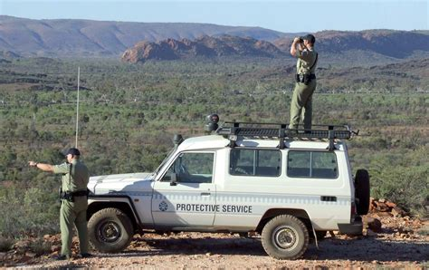

Area 51 Uncensored
Area 51 Restriction
Most commuters to Area 51 travel on unmarked Boeing 737s or 727s. Planes depart from a terminal at the McCarran International Airport in Las Vegas. Defense contractor EG&G owns the terminal. Each plane uses the word "Janet" followed by three digits as a call sign to the airport's control tower.
The airspace above Area 51 is known as R-4808N and is restricted to all commercial and military flights not originating from the base itself (except the Janet commuters, of course). Area 51 is believed to be part of either Edwards Air Force Base in California or the Nellis Air Force Range in Nevada, even though pilots from those bases are forbidden to fly in Area 51's airspace. In fact, pilots who fly into one of the buffer zones surrounding R-4808N reportedly face punishment from their commanders, though it's fairly lenient. Whenever a pilot flies through a buffer zone, the training exercise immediately ends and the pilot is ordered back to base. Knowingly flying into R-4808N is a much more serious offense, and pilots can face a court martial, dishonorable discharge and time in prison as a result.
The military classifies Area 51 as a Military Operating Area (MOA). The borders of Area 51 are not fenced, but are marked with orange poles and warning signs. The signs tell you that photography isn't allowed and that trespassing on the property will result in a fine. The signs also warn that security is authorized to use deadly force on people who insist on trespassing. Rumors circulate among conspiracy theorists over how many unfortunate truth seekers have died as a result of tromping around the grounds of Area 51, though most believe that trespassers are dealt with in a much less violent manner.
Pairs of men who don't appear to be in the military patrol the perimeter.
These guards are likely civilians hired from firms like Wackenhut or EG&G. Observers call them "cammo dudes," because they often wear desert camouflage. The cammo dudes usually drive around in four-wheel-drive vehicles, keeping an eye on anyone near the borders of Area 51. Supposedly, their instructions are to avoid contact with intruders, if possible, and act merely as both an observer and deterrent. If someone seems suspicious, the cammo dudes will call in the local sheriff to deal with him. Once in a while, they have confronted trespassers, allegedly seizing any film or other recording devices and intimidating the trespassers. Sometimes, helicopters provide additional support. There are rumors that the helicopter pilots occasionally use illegal tactics like hovering very low over trespassers to harass them.
Other security measures include sensors planted around the perimeter of the base. These sensors detect movement, and some believe they can even discern the difference between an animal and a human being. Since Area 51 is effectively a wildlife preserve, it was important to create warning devices that could not easily be tripped by a passing animal. One theory held by observers is that the sensors can detect the scent of the passing creature (the sensors detect an ammonia signature). While that has yet to be substantiated, it's certain that there are buried sensors all around Area 51. One Rachel resident named Chuck Clark discovered several of the sensors, and at one point the FBI accused him of interfering with signal devices and ordered him to either return a missing sensor or pay a fine. Clark denied taking one but agreed to stop his investigations.